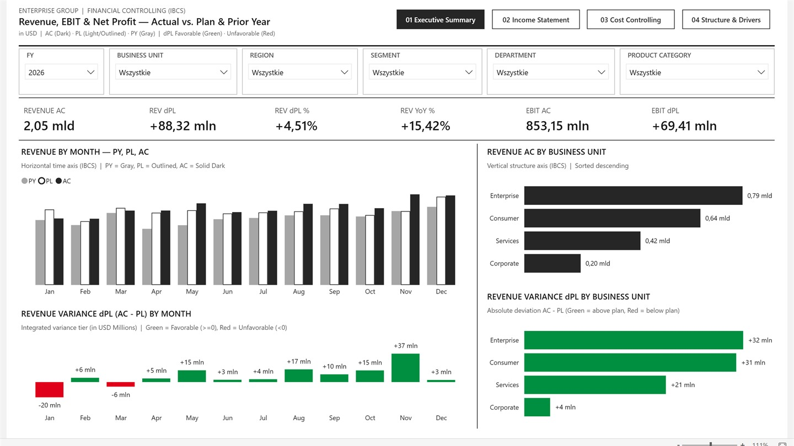
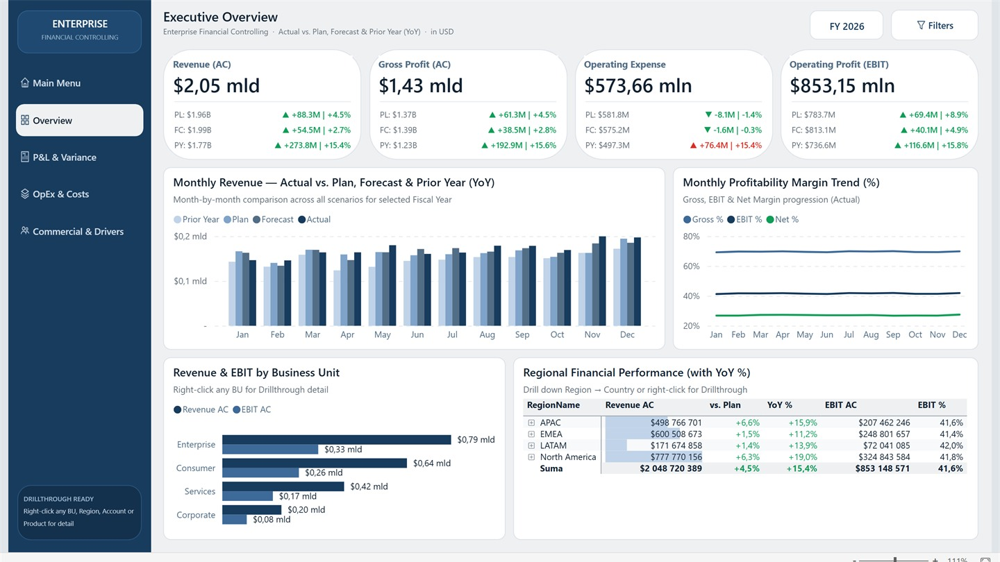
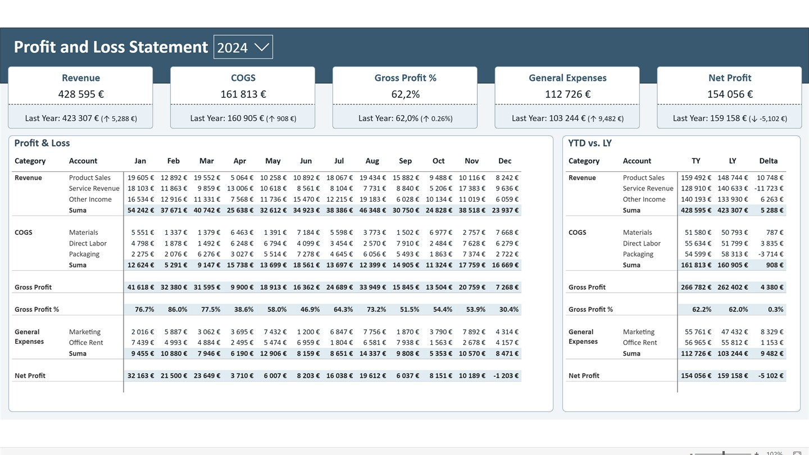
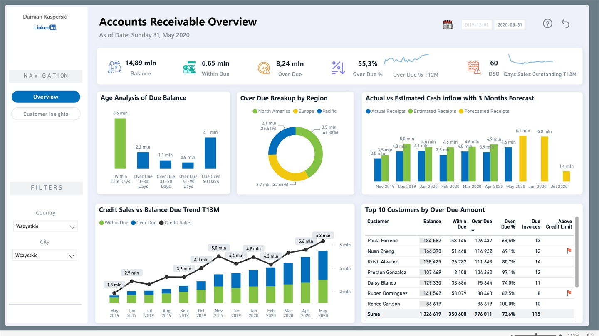
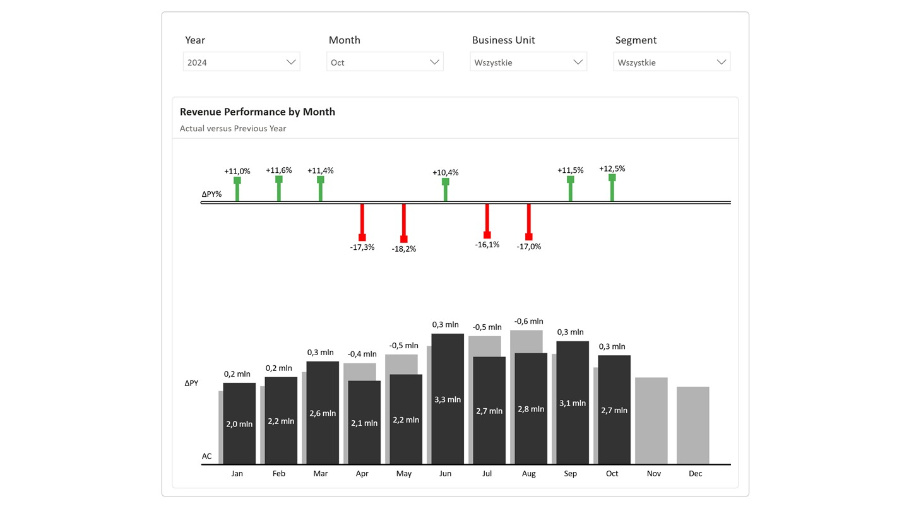
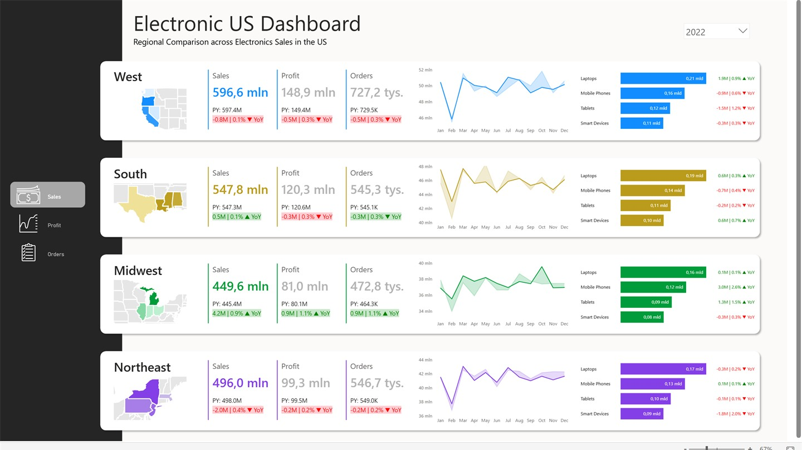
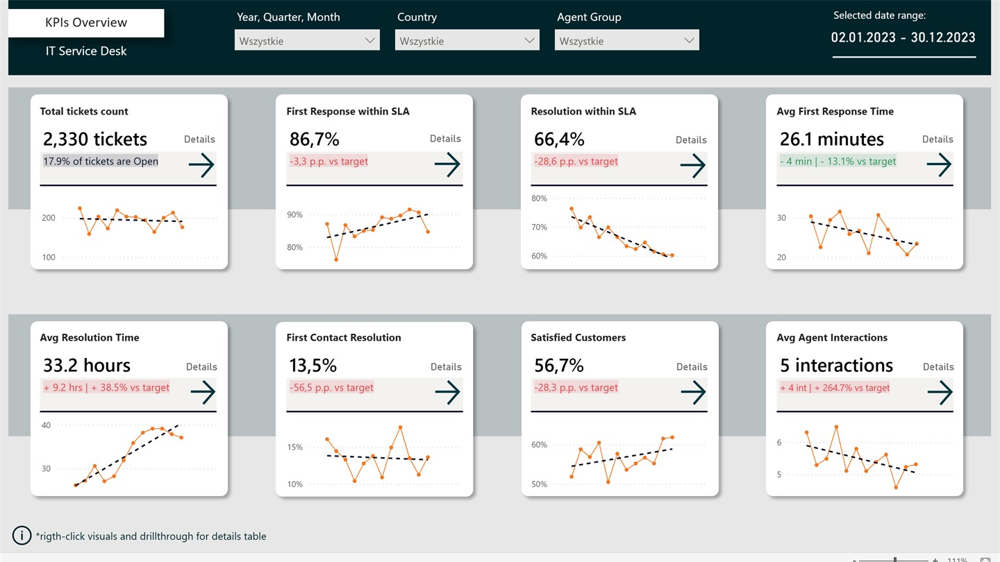
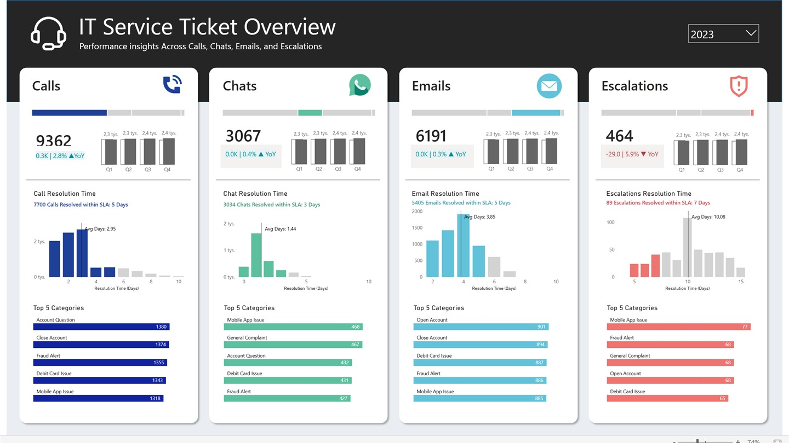

IBCS Financial Controlling
A financial controlling report that applies IBCS principles to performance comparisons and variance analysis.
Explore reportBI & Analytics
I build end-to-end analytics, from data integration and semantic models to Power BI reports.
Explore reports
IBCS Financial ControllingFilter by topic and choose a report to explore it in Power BI.
A financial controlling report that applies IBCS principles to performance comparisons and variance analysis.
Explore report
An executive controlling report designed to give decision-makers a clear overview of business performance.
Explore report
Drill into cost centers, track budget deviations, and analyze profitability margins in an interactive P&L matrix built with financial DAX patterns.
Explore report
Track outstanding invoices and Days Sales Outstanding (DSO), then explore overdue balances, payment trends, and customer payment behavior.
Explore report
Compare actuals with budget or forecast through custom variance charts and advanced DAX measures.
Explore report
Explore revenue, margin, and product performance by category and region to inform assortment decisions.
Explore report
Monitor helpdesk SLA compliance and customer satisfaction, with an executive view of service performance and resource allocation.
Explore report
Explore ticket resolutions, identify bottlenecks in the support process, and measure team performance against SLA targets.
Explore reportI’m an Expansion Data Analyst at Żabka Polska. I build analytics for retail expansion, including rent and location benchmarking, new-store performance, and expansion KPIs. My background in financial controlling helps me connect each metric to the business decision it supports.
My work spans data integration in Microsoft Fabric and Snowflake, semantic modeling and DAX, and Power BI delivery. I use Azure DevOps and Git to manage changes and make report releases repeatable.
Connect on LinkedInMaster’s degree in Corporate Finance and Accounting
Uniwersytet Ekonomiczny w Poznaniu